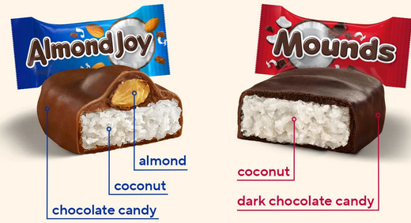

I have been very tired from work and thats made me lose some motivation for working on my website I also got all caught up in trying to self host and there wasant enough resources to make that easy for me I might have to learn that later or I have to run linux and that would be a massive pain since then I Would have to either reformat my old USB to run it or I would need to buy a new one and either way it looks like running ubuntu is going to be very anoyying if I have to do it overall ive been frustrated with that and busy with work and now I have a boyfriend too!!!!! mack is sweet and im thinking about him a lot and there hasn't been a lot of room for anything else ive been busy but I cant seem to find anything I have to do today so today I think I can work on my website a little more
on the 10th I thought I was gonna have so much fun messing with my site but I very quickly started to feel very weird in my head and I started to get a headache behind my eye massive bummer and as much I as I want to keep bulding off my site I just dont feel like it most of the time and between work and my BF I have been very unmotivated to do anything and the good thing is I have started to see the doctor more but It's just not gonna get better anytime soon I am really just wating until I feel ok and I have the motivation

on tuesday I go on a real date with my boyfriend!!!!!! and Ive come to learn that I really love mounds chocolate bars they taste so good and they are my new favorite chocolate bar at work I kept buying them and suddenly on friday I realized that I liked them more than crunch bars and so they are my new favorite and in other news I finaly have the weekend off for the first time in months bc all the high schoolers are headed back to school!!!!!!!
I bought this big tome it was HTML, CSS, & JavaScript All-in-One For Dummies I would have bought something more professional but the book I bought was nearly 40 dollars and the more collage level ones were like 50-80 dollars witch is crazy!!!!!!! and they are so massive too webdesigne is easy and not needed in the modern world as often as other programming professions but it's what im already used to and it's also still very useful I cant run a real webiste if I dont know the stuff really well so im gonna study more so I can get better!!!!!!!
im honestly confused and I feel very empty he lead me on really bad and it wasant his fault but I still was not prepared at all everything was going great but he just didint feel the same way as I did for him it was really upseting to not see it coming I really dont get feelings for pepole this was the first time I really felt anything really strongly and it didint go anywhere im honestly not sure if ill ever have a chance to develop feelings for someone again